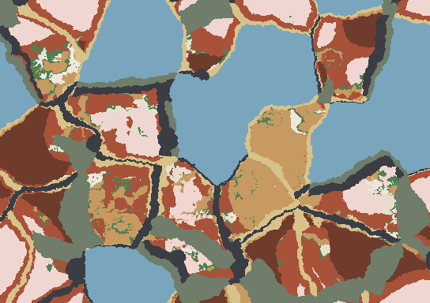
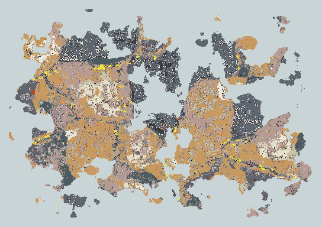
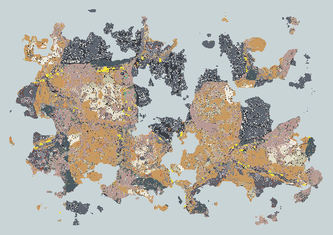
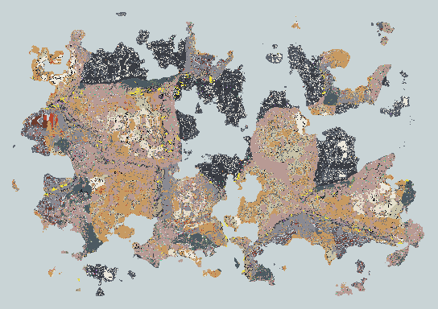

Geology
Under every tile is rock, and the rock is not noise: it is where the plates put it. A column is a soil, a sequence of beds laid on the sea floor and folded since, a basement, and between them granite domes, lava dikes, veins of metal, nodules of flint, and caves. Nothing underground is stored. It is a function of the tile, a depth and the seed, built on a 4 tile grid of provinces, so the whole underground costs about a megabyte and a second to read.
Source: src/sim/geology/geology.ts, src/sim/geology/rocks.ts, src/sim/geology/sequences.ts, src/sim/geology/minerals.ts, src/sim/geology/caves.ts, src/render/lit/strataTexture.ts, tools/strataPreview.ts
1From plates to ore
- ProvincePer 4 tile cell: how much of plutonic, volcanic, metamorphic, basin, arid, wet, hot, karst, craton, arc the plates made there.
- SequenceWhich pile of beds lies on the basement: shelf, platform, coal measures, evaporites, volcanic pile, metamorphic belt.
- Fold and dipStrata are bent by the mountain building and tilted, and the land surface cuts across them.
- Rock at depthSoil, then the beds, then the basement, with granite blobs, contact rock and lava dikes laid over.
- Minerals and cavesEvery mineral has a form and a set of host rocks and provinces. Caves are carved by tube and chamber noise in soluble or volcanic rock.
The view is a horizontal cut, a plane at one elevation, not a depth under each tile. It starts at the highest point of the world and moves down in steps of 2 m to -300 m: first it cuts the mountain tops, and the window onto the rock widens as it falls, past the snow line, past the plains, below sea level. Tiles whose ground is lower than the plane are not rock, they are air (drawn as the terrain, dimmed) or, over a lake or the sea, water down to its surface, so nothing can float in the water: a mineral is only ever shown where the ground really is. Cave and ore are functions of absolute elevation and of the depth below the smoothed ground, so the same cave is the same cave from every cut. Hovering a tile in the cut names the rock, the mineral and how far it lies below the ground and above sea level. The control is at the left of the screen, and . and , lower and raise the cut by 8 m, the page keys by 100 m.
2Provinces and sequences
A sequence is a stack of beds, youngest on top. Its total is scaled to the cover thickness of the province: thin on the cratons and mountain tops, hundreds of metres in the basins. The beds then lie in the ground at the depth the regional height says, so valleys cut into older beds than ridges, and the outcrop is the contour pattern you would expect.

ocean floor
thin shelf
mixed platform
chalk downs
coal measures
evaporite basin
red beds
karst platform
banded iron shield
volcanic pile
metamorphic belt
| Sequence | Total | Beds, youngest first (metres) |
|---|---|---|
| ocean floor | 20 m | shale 12, chalk 8 |
| thin shelf | 24 m | sandstone 14, shale 10 |
| mixed platform | 156 m | sandstone 20, shale 14, limestone 60, shale 12, limestone 30, sandstone 20 |
| chalk downs | 155 m | chalk 70, limestone 30, shale 15, sandstone 40 |
| coal measures | 160.5 m | sandstone 14, shale 10, coal seam 2, shale 9, sandstone 18, coal seam 3, shale 12, sandstone 20, coal seam 2.5, shale 15, limestone 25, sandstone 30 |
| evaporite basin | 104 m | gypsum 6, rock salt 16, shale 10, limestone 24, sandstone 30, shale 18 |
| red beds | 148 m | sandstone 90, shale 18, sandstone 40 |
| karst platform | 155 m | limestone 140, shale 15 |
| banded iron shield | 54 m | shale 8, ironstone 14, quartzite 20, shale 12 |
| volcanic pile | 161 m | tuff 14, basalt 26, tuff 8, andesite 40, tuff 10, basalt 30, obsidian 3, andesite 30 |
| metamorphic belt | 230 m | slate 50, schist 70, marble 20, quartzite 30, gneiss 60 |
3Rocks
| Rock | Group | Hardness | Behaviour | How it is made | What it is for |
|---|---|---|---|---|---|
| topsoil | loose | 1 | porous | Weathered rock mixed with rotted plants. A metre or two on flat wet ground, none on a cliff. | Digs by hand. Farmland later. |
| clay | loose | 1 | - | The finest weathered grain, washed into marshes and river flats. | Pots, bricks, daub. |
| sand | loose | 1 | porous | Quartz grains left where wind and water sort the rest away: deserts, beaches, old river beds. | Glass, mortar, casting moulds. |
| sandstone | sedimentary | 3 | porous | Sand cemented under later layers. Porous, so it holds water. | Easy to quarry and carve; building stone. |
| shale | sedimentary | 2 | - | Mud pressed to thin plates. It splits along its bedding and seals the layers under it. | Weak roofs in a mine; the host of coal and iron. |
| limestone | sedimentary | 3 | dissolves, porous | Shells and lime mud on a warm sea floor. Rain dissolves it, which is how caves start. | Building stone, burnt for lime and mortar. |
| chalk | sedimentary | 2 | dissolves, porous | A soft white limestone of microscopic shells. Flint grows in it as nodules. | Soft to cut; the home of flint. |
| rock salt | sedimentary | 2 | dissolves | What is left when a shallow sea dries in a hot basin. | Preserving food; the first trade good. |
| gypsum | sedimentary | 2 | dissolves | Laid down with salt as the sea dries, before the salt itself. | Plaster, and a sign that salt lies below. |
| coal seam | sedimentary | 2 | - | Swamp forest buried and cooked. It lies as thin beds between shale and sandstone. | Fuel that outburns wood. |
| ironstone | sedimentary | 5 | - | Banded red and grey layers laid down in very old seas. | The richest bedded iron. |
| granite | igneous | 6 | - | Magma that cooled slowly underground, in great domes under mountain belts and island arcs. | Hard, durable stone; the host of tin, gems and many veins. |
| basalt | igneous | 6 | - | Runny lava. The floor of every ocean, and flows in rifts and volcanic fields. Lava tubes run through it. | Hard, heavy stone; geodes form in its gas bubbles. |
| andesite | igneous | 5 | - | Stickier lava from subduction volcanoes. It builds the steep cones. | Tough stone; copper and silver veins follow it. |
| tuff | igneous | 2 | porous | Volcanic ash pressed to rock. | Soft, light, easily carved. |
| obsidian | igneous | 5 | - | Lava that cooled too fast to grow crystals, so it is glass. | Cuts sharper than flint. |
| slate | metamorphic | 3 | - | Shale squeezed and baked until it splits in clean sheets. | Roofing, paving. |
| schist | metamorphic | 4 | - | Slate squeezed further, until its mica glitters. Garnet and jade grow in it. | Weak to split; rich in gems. |
| gneiss | metamorphic | 6 | - | Granite or schist banded by great heat. It is the old floor of the continents. | Hard, banded building stone. |
| marble | metamorphic | 3 | dissolves | Limestone baked by a nearby granite. | Fine carving stone. |
| quartzite | metamorphic | 7 | - | Sandstone fused solid. Gold-bearing quartz veins cut it. | The hardest common stone; flakes like flint. |
Granite is not a bed. A slow 3D blob of granite is laid over any sequence where the province is plutonic, with a thin skin of contact rock round it: limestone to marble, sandstone to quartzite, shale to slate. Basalt dikes cut the volcanic provinces as thin vertical sheets.
4Minerals
A mineral is found only in its host rocks, only inside its depth window, and with a richness that is the sum of how much the province has of each feature the mineral likes. The form says how it sits in the rock: a vein is a thin curved sheet, a bed a flat lens, a nodule or geode a ball in a 3D grid, a pipe a vertical cylinder from a sparse grid on the old continental cores, a crust a patch near the surface, a fumarole a patch near volcanic vents, and guano a crust on the floor of dry caves. Gold also lies as flakes in the gravel of any river that crosses a gold province (Geology.placer).
| Mineral | Class | Form | Hosts | Likes | Depth | Mohs | Where, and what for |
|---|---|---|---|---|---|---|---|
| iron ore | metal | bed | ironstone, shale, sandstone, gneiss | basin 0.4, wet 0.3, craton 0.3 | 2 m to 4000 m | 5.5 | Lenses in banded ironstone and in the shale and sandstone beside it, and magnetite in old gneiss. Smelted into iron, the first hard tool metal. |
| copper | metal | vein | andesite, granite, basalt, sandstone, schist | volcanic 0.5, plutonic 0.5, arc 0.4 | 2 m to 4000 m | 3 | Hot-water veins round volcanic arcs and granite domes. Green stains show on the surface. Soft and easy to work: the first metal. Alloyed with tin it is bronze. |
| tin | metal | vein | granite, schist, gneiss | plutonic 0.9 | 2 m to 4000 m | 2 | In and beside granite domes only, and rare. Where it is found it is found in a few places. Mixed with copper to make bronze, which is why it is traded for so far. |
| lead | metal | vein | limestone, marble, shale | karst 0.7, plutonic 0.3 | 2 m to 4000 m | 2.5 | Veins in limestone, where hot brine once ran through the caves. Heavy and soft; pipes and weights. Poisonous. |
| zinc | metal | vein | limestone, marble, shale | karst 0.6, plutonic 0.2 | 2 m to 4000 m | 4 | With lead, in limestone. Alloyed with copper it makes brass. |
| silver | metal | vein | andesite, granite, limestone, quartzite | volcanic 0.5, plutonic 0.4, arc 0.3 | 8 m to 4000 m | 2.7 | Thin veins deep in arcs and granite domes, often with lead. Coin, ornament. |
| gold | metal | vein | quartzite, granite, schist, slate, gneiss | metamorphic 0.7, plutonic 0.3, arc 0.3 | 2 m to 4000 m | 2.5 | Thin quartz veins in mountain belts. Rivers that cross them carry flakes into the gravel of their beds. Never tarnishes, so it is the first thing people prize. |
| cinnabar | metal | vein | andesite, tuff, basalt, limestone | volcanic 0.8 | 2 m to 4000 m | 2.5 | Red crusts where hot springs reached the surface. Red pigment; the liquid metal is a deadly poison. |
| bauxite | metal | crust | clay, topsoil, sandstone, basalt | wet 0.6, hot 0.6 | 0 m to 15 m | 2 | A crust where tropical rain has leached everything else out of old rock. Aluminium, which nobody can smelt yet. |
| flint | industrial | nodule | chalk, limestone | karst 0.5, basin 0.5 | 0 m to 4000 m | 7 | Dark nodules strung along the bedding of chalk, and weathered out onto the ground above. Knapped into the first tools; strikes sparks against flint or iron. |
| sulphur | industrial | fumarole | tuff, andesite, basalt, limestone | volcanic 1 | 0 m to 60 m | 2 | Yellow crusts round volcanic vents and hot springs. Burns; the start of black powder, and of matches. |
| saltpetre | industrial | guano | limestone, chalk, marble, sandstone | arid 0.8 | 2 m to 4000 m | 2 | White crust on the floor of dry caves, where bats have roosted for ages. Preserves meat; the second part of black powder. |
| amber | gem | nodule | shale, sandstone, coal seam | wet 0.5, basin 0.4 | 2 m to 4000 m | 2.5 | Beads in coal measures and the mud under them: tree resin buried with the swamp. Warm to hold and burns with a smell; a gem and a charm. |
| rock crystal | gem | vein | granite, sandstone, quartzite, gneiss, schist | plutonic 0.4, metamorphic 0.4 | 2 m to 4000 m | 7 | Clear crystals lining cracks in hard rock. Clear, hard, and flakes like flint. |
| amethyst | gem | geode | basalt, andesite | volcanic 0.8 | 2 m to 4000 m | 7 | Purple crystal inside hollow stones, where gas bubbles in cooling lava filled with water. A gem. |
| jade | gem | nodule | schist, gneiss | metamorphic 0.8, arc 0.5 | 4 m to 4000 m | 6.5 | Green lenses in schist, in the squeezed rock along a subduction. Too tough to knap, so it is ground. Prized. |
| garnet | gem | nodule | schist, gneiss, marble | metamorphic 0.9 | 2 m to 4000 m | 7 | Dark red grains that grow in rock as it is squeezed and baked. A gem and a grit for grinding. |
| beryl | gem | nodule | granite | plutonic 0.8, craton 0.3 | 8 m to 4000 m | 7.8 | Green and blue crystals in the last coarse pockets of a granite dome. A gem; the green kind is emerald. |
| diamond | gem | pipe | gneiss, granite, sandstone, shale, limestone, quartzite | craton 1 | 30 m to 4000 m | 10 | In narrow pipes of volcanic rock that blew up from the deep mantle through the oldest continental cores. The hardest thing there is. |
5Caves
Below 2 m under the ground a cell can be a cave, flooded cave, dripstone cave. Caves are networks, so every passage leads somewhere. They lie in levels, as real caves do where a water table sat for a long age: every 22 m of elevation (less in lava, more in hard rock) is a flat floor of passages, and a passage is the edge between two cells of a 2D cellular diagram drawn for that level, bent by noise and swelling and narrowing along its length. Each edge is open or shut by a hash of the two cells it separates, so the same passage is open from every cut, and the share kept sets how connected the system is: above about two thirds the whole level is one maze, below that it breaks into branching clusters with dead ends. Where three cells meet there is a chamber, and at some of those a shaft drops to the level below, so the levels are joined. Limestone, chalk, marble, gypsum and salt take the biggest, best connected networks, scaled by the karst of the province; basalt and andesite take sparse flat tubes, the lava tubes, scaled by the volcanism; sandstone and the hard rocks a few thin fissures. A network only exists inside its own rock, so a cave stops at the bed above or below. Soil, clay, sand, coal and rock salt are too soft to hold a roof.
The levels are not separate: they share one plan, so a gallery at one level lies over the gallery at the next, and a vertical shaft at a junction drops from the one to the other and ends in a chamber on both floors. In karst country the shafts also cut through the caprock above a limestone bed, as sinkholes do. In a test block of well developed karst one system held 99% of the open volume and ran the whole 120 m of the block.
Water. A cave is flooded when it lies below the water table, and the table is not a guess: it is the sea at sea level, each lake at its own level and each river at its bed, relaxed inland a few centimetres in every metre and never closer to the surface than the ground allows (deeper in dry country). So a cave beside the sea stands full to sea level, a cave under a lake is full to the lake, and a cave high in the hills above any water is dry. It is the same answer from every cut, so the water level in a passage is continuous along it.
Life. A dry cave is an ecosystem of its own. The first metres under a mouth are mossy where the ground is wet; deeper in humid ground there are fungus gardens that glow faintly; dry limestone and sandstone caves hold bat guano, which is where saltpetre is found; under dripstone the floor is flowstone. The view draws each as a pixel-art texture, as the surface is drawn: rock by its group, rubble and stalagmites on the floor, ripples on the water.
- any mineral
- metal ore
- cave
6The surface the rock makes
The top of the column is what the player walks on. The geology is built while the world field is still being made (Geology takes the field, the seed and the river raster, not a finished world), and terrain/surface.ts reads its provinces, its soil depth and the rock at the top of every 4 tile cell, blended smoothly to the tile, to rewrite the biome array: bare rock on steep thin ground, karst pavement where soluble rock outcrops in a karst province, black ash and lava round the cones, white salt flats in evaporite basins and red badlands where soft dry-land beds are cut by slopes. The climate's own classification stays in field.climate, because the soil depth depends on it. How each rule fires, and the map it makes, is on the world generation page.
The same pass gives every tile a fertility: soil depth, soil kind, what the bedrock weathers into and the surface biome. It scales the eco score and the growth of every plant, so what lives on a tile follows the rock under it. Basalt and ash soils are rich, granite, quartzite and limestone poor, and bare rock, lava and salt nearly lifeless.
Cave mouths are on the surface too. A tile is a mouth where a cave network is open 1.5 m under its ground (render/caveMouths.ts), and the ground painter draws a dark hollow with a lit lip on its top left, so a cave can be found from above before the cut is lowered into it.
7Slices through the world



One column
The ground at x 1000, y 700, run by run:
| Rock | Depth | Minerals met | Cave levels |
|---|---|---|---|
| sandstone | 0 m to 8 m | - | - |
| shale | 8 m to 20 m | - | - |
| granite | 20 m to 128 m | - | - |